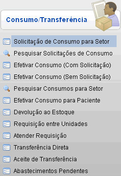
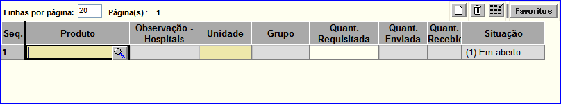
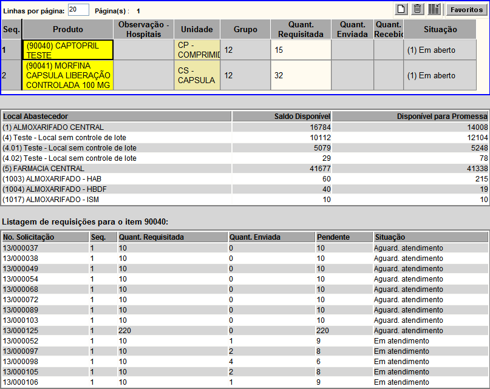

Solicitação
de Consumo para Setor [ Voltar
]
Esta tela tem por função permitir o usuário a realizar solicitações de consumo.
O formulário "Solicitação de
Consumo para Setor" encontra-se dentro do
menu "Movimentações - Consumo/Transferência".

Após clicar no formulário, o sistema
abrirá a seguinte tela:
Siga os passos abaixo para efetuar a solicitação de consumo:
1º Passo: informe os detalhes da solicitação. Os
campos em amarelo são obrigatórios.
- No. Solicitação.
Por padrão, este campo contém o sinal "+". Desta forma, quando o
registro é salvo, é-lhe atribuído o próximo número disponível à
solicitação.
- Local Abastecedor.
Selecione aqui o local que atenderá esta solicitação. Utilize o botão
 [Pesquisar] para selecioná-lo a partir de uma listagem contendo todos os locais abastecedores cadastrados. [Pesquisar] para selecioná-lo a partir de uma listagem contendo todos os locais abastecedores cadastrados. - Setor. Se desejar,
selecione neste campo um setor solicitante.
- Data Desejada.
Informe aqui a data para quando a solicitação é necessária. Utilize o botão
 [Data] para selecioná-la a partir de um calendário. [Data] para selecioná-la a partir de um calendário. - Observações. Utilize
este espaço para depositar qualquer informação adicional sobre esta
solicitação.
| |
Campos de data possuem alguns
atalhos importantes, são eles:
Data
atual: digite o sinal . (ponto) e
pressione a tecla "Enter" para que o sistema retorne a data atual;
Data
do mês corrente: digite o dia do mês e
pressione a tecla "Enter" para que o sistema retorne o mês e ano
correntes;
Dias
a contar da data atual: digite o sinal + (mais) ou - (menos)
antes do número de dias em referência à data atual e pressione
a
tecla "Enter" para a data anterior ou posterior à data atual. |
2° Passo: clique no
botão  [Salvar] para
salvar os dados do documento. Após
salvar o documento, um número de solicitação é-lhe atribuído. Além
disso, será exibida na parte inferior da tela uma grade para a
inclusão dos materiais da solicitação (conforme imagem abaixo). [Salvar] para
salvar os dados do documento. Após
salvar o documento, um número de solicitação é-lhe atribuído. Além
disso, será exibida na parte inferior da tela uma grade para a
inclusão dos materiais da solicitação (conforme imagem abaixo).

3° Passo: especifique os produtos da solicitação. Clique no botão  [Pesquisar]
para selecionar o produto a partir de uma listagem contendo todos os
produtos cadastrados. Em seguida, informe a quantidade desejada para o
produto. Caso deseje adicionar mais de um produto clique no botão [Pesquisar]
para selecionar o produto a partir de uma listagem contendo todos os
produtos cadastrados. Em seguida, informe a quantidade desejada para o
produto. Caso deseje adicionar mais de um produto clique no botão  [Novo] ou aperte a tecla "Enter". [Novo] ou aperte a tecla "Enter".
Selecionando um produto especificado na grade, aparecerá uma listagem dos locais abastecedores do produto e uma listagem de requisições já realizadas para o item em questão. Conforme imagem abaixo:

4° Passo: clique no botão [Salvar] para adicionar os produtos escolhidos na solicitação.
5° Passo: clique no botão [Confirmar] para salvar a
solicitação. Após confirmar a solicitação, os seguintes botões serão habilitados:
 |
Clique neste botão para gerar o relatório
"Solicitação de Consumo para Setor". |

|
Clique neste botão para gerar o relatório
"Pendência entre Solicitação e Transferência". |
|
Uma
vez criada, a solicitação não pode ser excluída, apenas cancelada. Para
tal, é preciso inserir uma justificativa na janela instantânea que se
abrirá. Clique no botão "OK" após inserir a justificativa. |
| Clique neste botão para editar as observações da solicitação. |
Ir
para o topo da página |